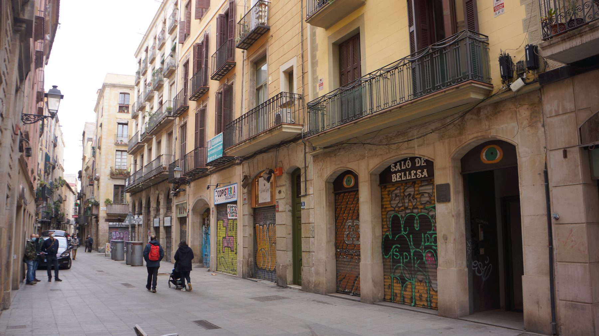
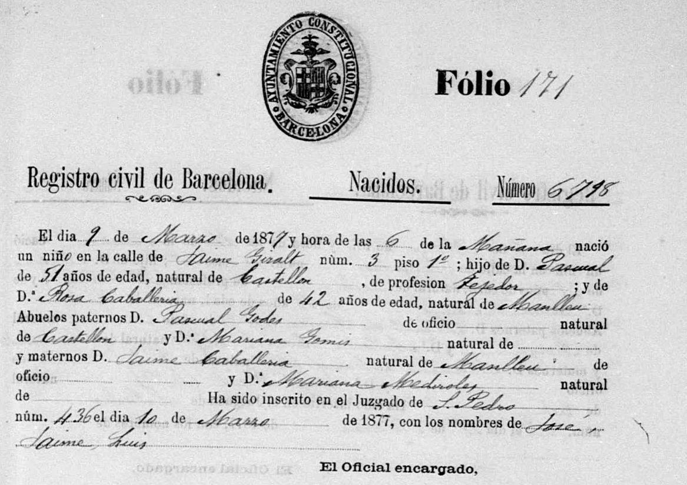
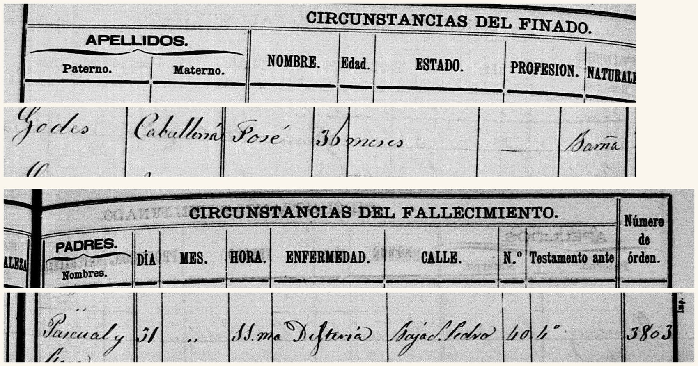
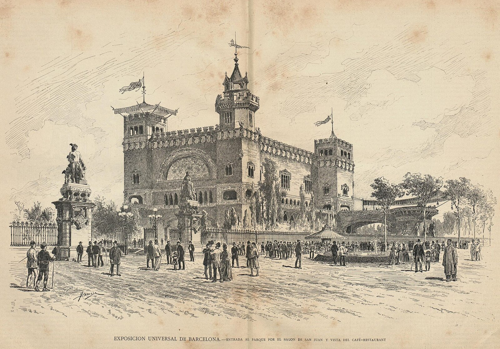

Sant Pere Més Baix, 40 4t (1885-1891)
Audioguia
Prem play per escoltar la història
El carrer
La família va ocupar el quart pis del número 40 durant els darrers anys de la vida de Pasqual.
Sant Pere Més Baix és un dels tres carrers paral·lels —Més Alt, Mitjà i Més Baix— que travessen el barri de Sant Pere de punta a punta. Fixeu-vos en els porxos: sota les voltes hi havia botigues i obradors, i a sobre, pisos i més pisos.
Aquest era el barri del tèxtil. Des del segle XVIII, els velers hi havien instal·lat els telers, i després hi van arribar les fàbriques d'indianes. Al costat hi tenien el mercat de Santa Caterina, obert el 1848, el primer mercat cobert de Barcelona.
No hi van venir per casualitat. Al registre de naixement de Josep, del 1877, Pasqual hi consta com a teixidor. La família d'un teixidor vivint al barri dels teixidors: la casa i la feina eren el mateix territori.
Un quart pis, però, era el pis dolent: el més barat, el més alt, el que es pujava a peu i el que es quedava sense aire a l'estiu. Els Godes n'havien ocupat un a cada casa d'aquesta ruta.
I a quatre minuts a peu, el parc de la Ciutadella, que en aquells anys estava a punt de canviar de cara per sempre.
Josep Godes Caballeria (1877-1885)


Biografia
L'últim fill de Pasqual i Rosa va néixer a Jaume Giralt 3 el 9 de març de 1877 i va morir en aquesta casa el 31 de maig de 1885, de diftèria. Tenia vuit anys.
Tota la seva vida cap entre aquests dos papers: vuit anys, dues adreces i una data. Va ser el petit de nou germans.
Què hi diu
El de naixement: «El dia 9 de Març de 1877 y hora de las 6 de la Mañana nació un niño en la calle de Jaime Giralt núm. 3 piso 1º», fill de Pasqual, teixidor, i de Rosa Caballeria. El de defunció el troba vuit anys després, dues ratlles abans del final del full: «Godes / Caballeria / José», causa Difteria, carrer «Baja S. Pedro», número 40, 4t.
A la columna «Edad» hi diu «36 meses». No quadra: entre les dues dates hi ha vuit anys i dos mesos, i el registre de naixement és inequívoc. L'escrivent va anotar malament l'edat d'un nen que no coneixia, en un full on aquell dia n'hi havia molts.
El 1885, Pasqual tenia 61 anys i Rosa 50. Dolors, Artur, Pau i Mercè havien superat la infància; cinc germans més havien mort abans d'arribar-hi.
El registre de defuncions anota la causa amb una sola paraula, i no és l'única del full: a la mateixa pàgina, en menys d'una setmana, hi consten una angina diftèrica, un crup i un crup diftèric. Tres noms per a la mateixa cosa, i tots de criatures.
Què era la diftèria
La diftèria és una infecció bacteriana de la gola. El bacteri hi forma una membrana grisa i gruixuda que s'adhereix a les amígdales i la laringe, i que va tancant el pas de l'aire. També allibera una toxina que pot arribar al cor i als nervis.
Es contagia per l'aire, en tossir o esternudar, i s'acarnissava amb la canalla. Al segle XIX se la coneixia com «el garrot dels nens»: en castellà, «el garrotillo». El nom descriu exactament el que passava.
El 1885 no hi havia res a fer. L'antitoxina que la va convertir en una malaltia tractable no va arribar fins a la dècada de 1890, i la vacuna, ja entrat el segle XX. Josep va morir cinc anys abans que existís el remei.
En un quart pis d'una casa plena de gent, amb els germans compartint habitació, la diftèria era una sentència que entrava per la porta i no en tornava a sortir sola.
L'Exposició Universal de 1888
Mentre la família vivia en aquest carrer, a deu minuts a peu es va aixecar l'esdeveniment més gran que Barcelona havia vist mai.
Una exposició universal era la fira del món: cada país hi enviava les seves màquines, els seus productes i el seu art per ensenyar de què era capaç. Londres havia estrenat el format el 1851 i París hi construiria la torre Eiffel el 1889. Barcelona va fer la seva del 8 d'abril al 9 de desembre de 1888, i va ser la primera d'Espanya.
El recinte va ser el parc de la Ciutadella: els terrenys de la fortalesa que Felip V havia clavat al barri de la Ribera el 1716 i que l'exèrcit no va cedir a la ciutat fins al 1869. El símbol era exacte: on hi havia hagut el castell que vigilava els barcelonins, ara hi hauria jardins, palaus de vidre i visitants de mig món.

Gravat de Jaume Pahissa i Laporta, «La Hormiga de Oro», 5 d'agost de 1888 · Domini públic
L'edifici que domina el gravat és el Cafè-Restaurant de Lluís Domènech i Montaner, que tothom va acabar coneixent com el Castell dels Tres Dragons. No es va arribar a acabar a temps, però encara és allà. També són d'aquells mesos l'Arc de Triomf de Josep Vilaseca, que feia de porta d'entrada, l'Umbracle, l'Hivernacle i el monument a Colom al final de la Rambla.
Aquells edificis van ser el tret de sortida del Modernisme. Els arquitectes que hi van treballar van sortir de l'Exposició amb un llenguatge nou —ferro vist, ceràmica, vidre de colors— que en vint anys ompliria mitja Barcelona.
L'impacte va anar molt més enllà del recinte. La ciutat va urbanitzar el passeig de Colom i el Saló de Sant Joan, va estrenar enllumenat elèctric als carrers principals, va reformar el port i va rebre més de dos milions de visitants. També s'hi va endeutar fins al coll: l'alcalde Francesc Rius i Taulet va haver de defensar la factura durant anys.
Barcelona va sortir del 1888 convençuda de ser una capital europea. Va ser l'any que la ciutat va decidir com volia que la miressin.
Des del número 40
Els Godes ho tenien tot a tocar. Però la ciutat dels palaus de vidre i la ciutat dels quarts pisos eren la mateixa ciutat: mentre s'inaugurava l'Exposició, aquesta família acabava d'enterrar un fill de vuit anys mort de diftèria. Artur en tenia vint i començava a fer-se músic; Josep feia tres anys que no hi era.
Context Espanya
Alfons XII va morir el novembre de 1885. Maria Cristina d'Habsburg va assumir la regència durant la minoria d'edat d'Alfons XIII, mantenint el sistema d'alternança de la Restauració.
El 1890 es va restablir el sufragi universal masculí. Les eleccions de 1891 van ser les primeres generals celebrades sota aquesta reforma.
Context Catalunya
El Memorial de Greuges de 1885 va presentar al rei reivindicacions econòmiques, jurídiques i culturals. Es va convertir en una fita del catalanisme polític.
Aquell mateix any una greu epidèmia de còlera va afectar Catalunya, amb un impacte molt desigual sobre les classes populars.
Context Barcelona
La imatge de capital moderna que va deixar l'Exposició convivia amb habitatges densos, pisos alts a la ciutat vella, jornades llargues i conflictes laborals.
El moviment obrer guanyava organització. El 1890 Barcelona va participar en la primera celebració internacional del Primer de Maig.
Consulta de l'Arxiver
Quin gran esdeveniment va transformar la Ciutadella i va projectar internacionalment Barcelona el 1888?